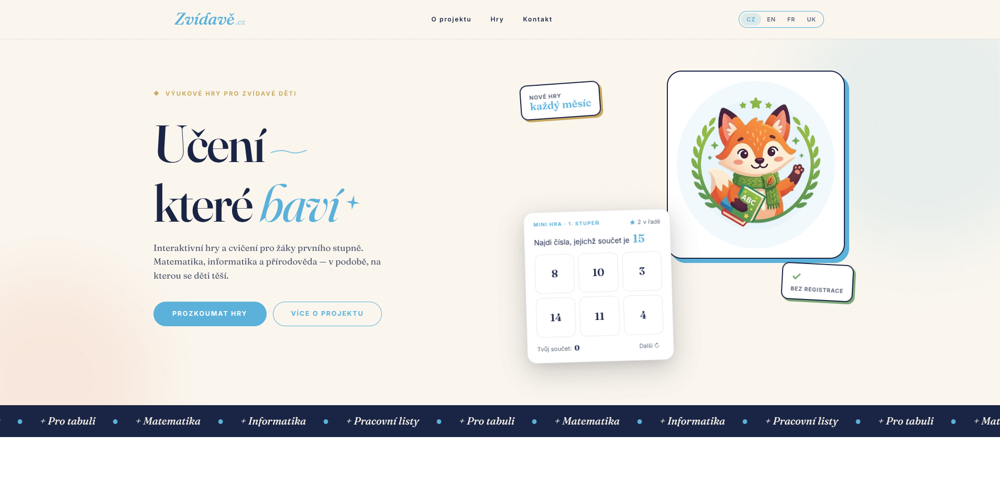

Učím informatiku na základní škole a každý den vidím, jak děti pracují s výukovými aplikacemi. Chtěla jsem zkusit, jestli jde udělat hru jinak – bez časového tlaku, bez penalizací a bez mechanismů, které motivují krátkodobě.

Zvídavě.cz vzniklo z otázky, kterou si kladu při každé hodině: proč děti od vzdělávacích aplikací tak rychle odcházejí? Nejděastěji ne proto, že by je téma nebavilo – ale proto, že aplikace jsou navržené tak, aby fungovaly na krátkodobý tlak. Odpočítávání, hvězdičky za rychlost, penalizace za chybu.
Chtěla jsem zjistit, co se stane, když tohle všechno odstraním. Jestli hra bez vnějších odměn děti vůbec vtáhne – a jak taková hra vlastně vypadá.
Pro koho je Zvídavě.cz určeno:
Při návrhu jsem čerpala hlavně ze dvou zdrojů: z přímého pozorování dětí ve třídě a z konstruktivistické pedagogiky, která mi jako UX designérce dává hodně – chyba je přirozená součást učení, ne trest; žák staví porozumění vlastním prozkoumáváním; prostředí vyzývá bez nápověd.
Největší poučení nepřišlo z teorie, ale z hodiny: děti, které se v běžných aplikacích po chybě vzdají, u her bez penalizace zkouší znovu – a samy si říkají, proč to nefungovalo.
Co jsem sledovala při návrhu:
Přímé pozorování ve třídě jako hlavní zdroj zpětné vazby.
Před zahájením návrhu jsem si sepsala principy, které určují, co Zvídavě.cz nikdy nebude obsahovat. Každý bod vznikl jako reakce na konkrétní vzorec, který jsem viděla v existujících aplikacích.
Ne každé rozhodnutí bylo samozřejmé. Čtyři, která se ukázala jako nejdůležitější:
Ztratíš prvek napětí. Získáš prostor pro přemýšlení – a děti, které se jinak vzdávají po deseti sekundách, zůstávají a zkouší dál.
Vrstvička (maskot první hry) neopravuje, neznámkuje, nesrovnává. Reaguje na volbu hráče a nechá ho, aby si sám ověřil, jestli měl pravdu.
Žádná závislost na serverech, přihlašování ani aktualizacích. Hra funguje v prohlížeči – i na školním tabletu bez spolehlivého internetu.
Hra nevede ke správné odpovědi nejkratší cestou. Vyvízí ke zkusění různých kombinací – a pak ukazuje, co se stane. Závěr si žák udělá sám.
První hotová hra na platformě je Vrstvička – badatelská dílna 3D tisku pro 2.–5. třídu. Hráč si vybere předmět, který chce vytisknout (váza, terč na šipky, loutka na prst…), nastaví tři parametry: materiál, výplň a rychlost tisku. Pak sleduje animaci tisku a dozví se, jestli jeho volba dávala smysl.
Hra záměrně neříká předem, co je správně. Stejnou kombinaci parametrů může být pro jeden předmět ideální a pro jiný špatná. Badatelský deník v aplikaci zaznamenává pokusy, takže děti vidí, co už zkousěly.
Vrstvička: hráč nastavuje materiál, výplň a rychlost – pak sleduje, jak se předmět tiskne.
Největší posun mezi prvním prototypem a aktuální verzí nebyl vizuální. V první verzi hra dávala zpětnou vazbu okamžitě po každé volbě. Teprve po testování jsem zjistila, že přesnější moment je až po dokončení – když žák řekne, že skončil. Prodleva způsobila, že děti přemýšlely víc před kliknutím.
Iterace na načasování zpětné vazby a vizuální reprezentaci parametrů tisku.
Projekt je živý a roste pomalu – záměrně. Každá hra prochází testováním ve třídě, než jde ven. To zabere čas, ale znamená to, že výsledek funguje s reálnými dětmi, ne jen v prototypu.
Zvídavě.cz je zatím v rané fázi. Cílem není rychle přidat co nejvíc her, ale pochopit, co dělá výukovou hru dobrou – a teprve pak škálovat.